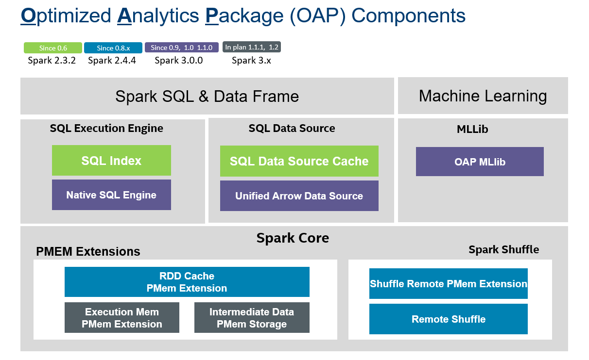

OAP Project Overview
Optimized Analytics Package (OAP) for Spark platform is a open source project for multiple Spark optimizations and features driving by Intel and the community. Spark is powerful and well optimized in a lot of aspects. But we still face a few challenges for Spark to the next level performance.
-
The JVM and row-based computing engine preventing Spark to be fully optimized for Intel hardware, for example AVX/AVX512, GPU
-
The current implementation of key aspects, such as memory management & shuffle didn’t consider the latest technology advancements, like PMEM
-
The batch processing engine a lot of times cannot satisfy the need of queries with high performance requirement.
OAP Project is targeted to optimize Spark in these aspects above, now it has 8 components including SQL DS Cache, Native SQL Engine, Arrow Data Source, OAP MLlib, PMem Spill, PMem Common, PMem Shuffle and Remote Shuffle.

Guide
Please refer to the total OAP project installation and development guide below.
You can get more detailed information from each module web page of OAP Project below, or from the left sidebar navigation.